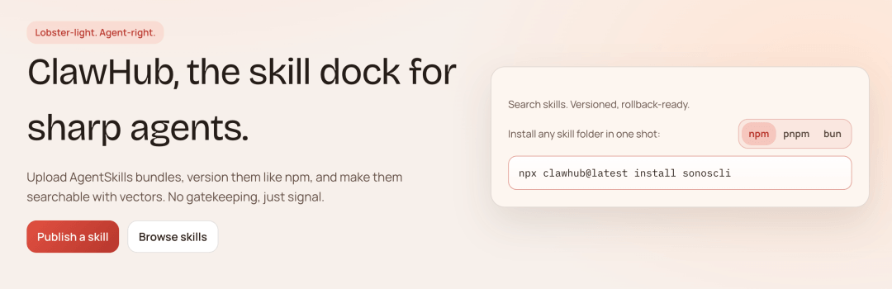

OpenClaw Skills -- ClawHub
OpenClaw Skills は、指示コードを含む Markdown ファイルで、Agent が特定のタスクを実行したり、ワークフロー機能を最適化したりするのに役立ちます。
OpenClaw をチャットボットからスーパーアシスタントへと変えているのは、実はその Skills エコシステムです —— AI の App Store に相当します。
簡単に言うと：
OpenClaw = iPhone 手机 Skills = App Store
Skill がない AI はチャットしかできませんが、Skill がある AI は検索、自動化、OS操作、API呼び出し、スクリプト実行ができます。
典型的な Skill のディレクトリ構造は以下の通りです：
my-skill/ ├── SKILL.md # 主说明文件（含 YAML frontmatter + Markdown 指令） ├── script.py # 可选：Skill 依赖的脚本 └── config.json # 可选：配置文件
より多くの skills の内容については、以下を参照してください：https://www.runoob.com/ai-agent/skills-agent.html
ClawHub -- Skillsのインストールと使用
ClawHub は OpenClaw の Skills マーケットであり、OpenClaw の App Store と考えることができます。
OpenClaw の App Store は ClawHub と呼ばれます --https://clawhub.ai/現在、数万ものコミュニティ Skills が集まっています。

アナロジー：
OpenClaw = 操作系统 Agent = 大脑 ClawHub = 应用商店
ClawHub は OpenClaw の公開スキルレジストリであり、Skills の発見、インストール、更新、バックアップに使用されます。
- 公式サイト：https://clawhub.ai/
- 国内ミラーアドレス（より高速）：https://skillhub.tencent.com/
ClawHub の機能：
- Skills を閲覧
- Skills を検索
- Skills をインストール
- Skills を更新
- Skills を公開
実行プロセス：
用户提需求 → Agent 做决策 → ClawHub 找工具 → Skill 去执行 → 返回结果

ステップ1：ClawHub CLIをインストールする
npm i -g clawhub clawhub --version
ステップ2：Skillを検索してインストールする
# 搜索 Skill（支持自然语言） clawhub search "send emails automatically" # 安装 Skill clawhub install <slug>
デフォルトでは、CLI は Skill を現在の作業ディレクトリの ./skills フォルダにインストールします。
OpenClaw workspace が設定されている場合、clawhub はその workspace にフォールバックします。ただし、--workdir パラメータまたは CLAWHUB_WORKDIR 環境変数でパスを上書きしない限りです。
OpenClaw は <workspace>/skills から Skill を読み込み、次のセッションで有効になります。
ステップ3：OpenClawセッションを再起動する
openclaw chat # 新 Session 启动后，Skill 自动加载生效
Skill を更新する：
clawhub sync # 更新当前 workdir 下的所有 Skill
国内ミラーを使用する
国内ミラーアドレスhttps://skillhub.tencent.com/これを使うとインストールが速くなります。

ターミナルで以下のコマンドを実行すると、SkillHub CLI をインストールでき、優先的に SkillHub を使ってスキルのインストールを高速化できます：
curl -fsSL https://skillhub-1388575217.cos.ap-guangzhou.myqcloud.com/install/install.sh | bash
例えば、検索機能をインストールする場合：
skillhub install tavily-search
インストールが完了すると、バックグラウンドでこの Skill がインストール済みであることを確認できます：

よく使うSkills
OpenClaw を使い始めたばかりなら、以下のインストール順序を強くお勧めします：
- まず Skill Vetter をインストールして、最低限の安全性を確保する
- 次に self-improving-agent またはその変種をインストールして、AI に学習を開始させる
- 必要に応じて Summarize / Agent Browser / Gog / Github / Multi Search Engine といった万能スキルを追加する
インストール方法はとても簡単です：
1、まず clawhub CLI をインストールします
npm i -g clawhub
2、次にこれらの Skills をインストールします：
clawhub install self-improving-agent clawhub install summarize # 批量更新全部 clawhub update --all
よく使われる Skills のリストは以下の通りです：
| # | Skill | 説明 | 適用シーン | インストール |
|---|---|---|---|---|
| 1 | self-improving-agent | 失敗と訂正を記録し、振り返り最適化する | 失敗の振り返り / 繰り返しのエラー / ユーザーの訂正 | clawhub install self-improving-agent |
| 2 | summarize | 多形式コンテンツの要約（Webページ/PDF/動画など） | 長文の読解 / ドキュメントの要約 | clawhub install summarize |
| 3 | agent-browser | 自動ブラウザ操作（クリック/入力/取得） | スクレイピング / フォーム / 自動化 | clawhub install agent-browser |
| 4 | skill-vetter | インストール前のセキュリティチェック | 権限の確認 / リスクのあるプラグイン | clawhub install skill-vetter |
| 5 | github | gh を使って GitHub を操作 | PR / Issue / CI | clawhub install github |
| 6 | gog | Google Workspace 統合 | メール / ドキュメント / スプレッドシート | clawhub install gog |
| 7 | ontology | 構造化された知識グラフの記憶 | プロジェクト / マルチタスク管理 | clawhub install ontology |
| 8 | proactive-agent | 能動的な実行とスケジューリング | 定时タスク / 自動実行 | clawhub install proactive-agent |
| 9 | multi-search-engine | マルチエンジン検索の集約 | 調査 / 比較 | clawhub install multi-search-engine |
| 10 | humanizer | テキストをより自然に最適化 | コピー / 推敲 | clawhub install humanizer |
| 11 | nano-pdf | 自然言語で PDF を編集 | 契約書 / ドキュメントの修正 | clawhub install nano-pdf |
| 12 | notion | ページとデータベースの管理 | ノート / 知識ベース | clawhub install notion |
| 13 | obsidian | Markdown ノートの自動化 | 整理 / 蓄積 | clawhub install obsidian |
| 14 | api-gateway | 100以上のAPIに接続 | システム統合 | clawhub install api-gateway |
| 15 | automation-workflows | 自動化フローの設計と実行 | 副業 / 自動化 | clawhub install automation-workflows |
| 16 | auto-updater | Skills を自動更新 | 長期運用 | clawhub install auto-updater |
| 17 | openai-whisper | ローカル音声の文字起こし | 会議の記録 | clawhub install openai-whisper |
| 18 | nano-banana-pro | 画像生成と編集 | ポスター / 画像 | clawhub install nano-banana-pro |
| 19 | stock-analysis | 株式と暗号資産の分析 | トレンド / 分析 | clawhub install stock-analysis |
| 20 | weather | 天気の確認と予測 | 日常の確認 | clawhub install weather |
自分のSkillを作成する
以下は最もシンプルな SKILL.md の例です：
--- name: my-skill description: Does a thing with an API. --- # My Skill ## Rules - Always confirm with the user before making destructive changes. - Use the credentials from environment variable MY_API_KEY. ## Usage When the user asks to "do the thing", call the API endpoint at https://api.example.com/action with the provided payload.
書き終えたら、公開コマンドを実行します：
clawhub publish ~/.openclaw/skills/my-skill \ --slug my-skill \ --name "My Skill" \ --version 1.0.0 \ --tags latest
公開には、登録から少なくとも1週間経過した GitHub アカウントが必要です。--slug は ClawHub 上での Skill の一意の識別子であり、レジストリ全体で一意である必要があります。
その他の拡張